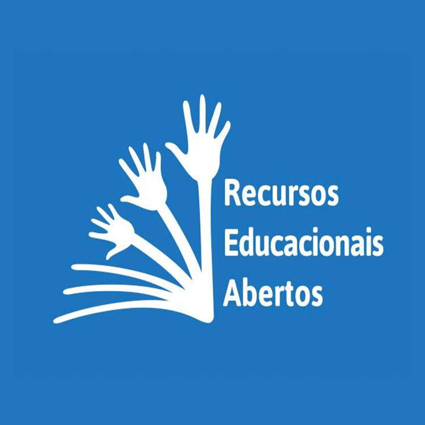
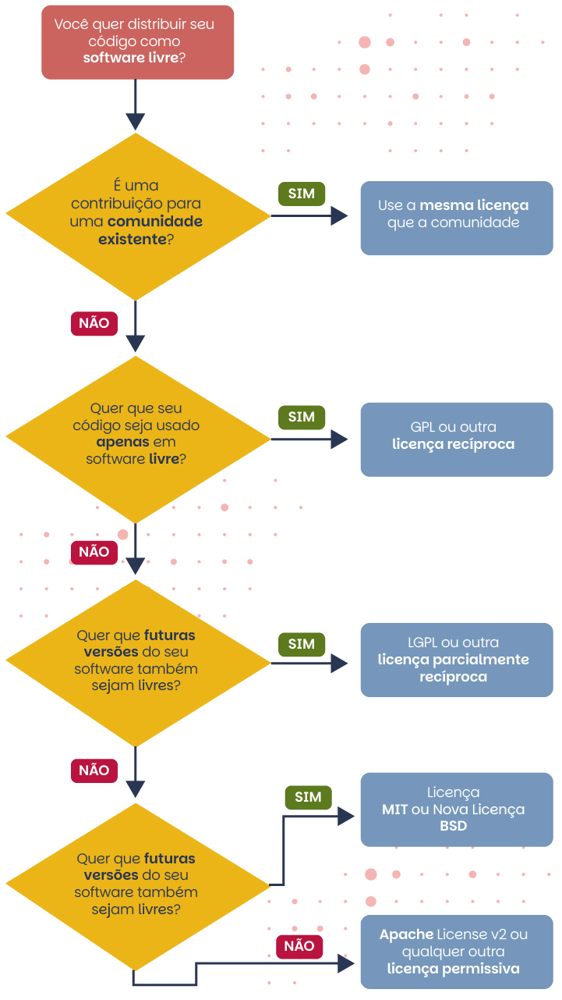

Módulo 5 . Aula 4 O que são Recursos Educacionais Abertos
Bem-vindos à quarta aula do curso! Esperamos que ao final desta aula você seja capaz de:
- Compreender o conceito de Recursos Educacionais Abertos.
- Identificar as principais características que diferenciam REA de materiais gratuitos.
- Conhecer as variações das licenças abertas.
Qualidade de Recursos Educacionais Abertos

Na sociedade da informação, o uso intensivo de tecnologias digitais e de dados no cotidiano permite que estudantes acessem rapidamente diversas informações sobre temas diversos, que docentes compartilhem conteúdos sem barreiras geográficas e que materiais educacionais sejam disseminados globalmente com baixo custo.
Apesar desse cenário, os sistemas de produção, distribuição e compartilhamento de informações educacionais ainda não acompanham a velocidade dessas transformações, o que permite identificar uma desconexão estrutural que impede a promoção de processos de ensino e aprendizagem mais acessíveis, eficazes e sustentáveis. O movimento em prol da Educação Aberta emerge como uma possível resposta a esse descompasso, buscando alinhar as práticas educacionais às possibilidades do ambiente digital (Singun, 2025; Timotheou et al., 2022).
Recursos Educacionais Abertos (REA) são definidos como materiais de ensino, aprendizagem e pesquisa sem custos e sem restrições de acesso. Contam com licenças abertas que autorizam seu uso livre e com formatos técnicos abertos, facilitando customizações para diferentes contextos educacionais.
Conceitos de Recursos Educacionais Abertos
Os Recursos Educacionais Abertos (REA) são materiais de ensino, aprendizagem e pesquisa, em qualquer formato ou mídia, que se encontram em domínio público ou são disponibilizados sob licenças abertas, permitindo acesso, uso, adaptação e redistribuição por qualquer pessoa.
Para maior compreensão sobre o conceito e a importância dos Recursos Educacionais Abertos (REA) no movimento da Educação Aberta, torna-se primordial um resgate da história dos REA.
A concepção de recursos educacionais disponíveis para livre acesso e adaptações não é algo recente, remontando quase ao surgimento da própria rede. Por isso, em 2006, David Wiley descreve quatro eventos marcantes para a história dos Recursos Educacionais Abertos. São eles:
| Ano | Marco | Descrição |
|---|---|---|
| 1994 | Objeto de aprendizagem (Learning Object): termo idealizado por Wayne Hodgins. | O papel dos objetos de aprendizagem na história dos REA está ligado à difusão da ideia de que os materiais digitais podem ser projetados e produzidos de forma a serem facilmente reutilizados em diversos contextos. Juntamente com sua ênfase em reutilização, esse movimento gerou vários esforços de padrões destinados a detalhar metadados, troca de conteúdo e outros padrões necessários para que os usuários encontrem e reutilizem conteúdo educacional digital (ex.: ARIADNE, SCORM, IEEE/LOM, IMS etc.). |
| 1998 | Conteúdo Aberto (Open Content): termo definido por David Wiley. | Termo direcionado pelo autor para a área da educação, mas que se popularizou em diversas dimensões da internet. No que diz respeito aos REA, desempenhou papel fundamental para destacar que os princípios dos movimentos de Código Aberto e Software Livre podem ser aplicados à produção de conteúdo. É quando surge, então, a primeira licença aberta dedicada para conteúdo (Open Publication Content). |
| 2001 | Creative Commons: fundado por Lawrence Lessig, a iniciativa disponibiliza um conjunto de licenças flexíveis com instrumentos legais significativamente mais fortes do que as licenças abertas anteriores para conteúdo. | O papel da Creative Commons na história dos REA é o aumento da credibilidade e da confiança de suas licenças legalmente superiores, muito mais fáceis de usar, trazidas para a comunidade de conteúdo aberto. Desempenhou papel fundamental no processo de adesão ao movimento. |
| OpenCourseWare: iniciativa da MIT de publicar cursos para acesso público, gratuito e uso não comercial. | OpenCourseWare desempenhou muitos papéis na história dos REA, entre eles inclui-se o exemplo de compromisso em nível institucional, trabalhando ativamente para incentivar projetos semelhantes e reforçando a importância da adesão das instituições ao movimento. |
Em 2002, o termo “Recursos Educacionais Abertos” (REA) foi cunhado em um evento da Unesco intitulado “The Forum on the Impact of Open Courseware of Higher Education Institutions in Developing Countries”, quando discutiu-se sobre o impacto de iniciativas que potencializariam uma educação mais inclusiva, equitativa e de qualidade. Na ocasião, definiu-se REA como “oferta de recursos educacionais abertos, mediada por tecnologias de informação e comunicação, para consulta, utilização e adaptação por uma comunidade de usuários para fins não comerciais” (Unesco, 2002).
Uma década depois, em 2012, como resultado da realização do I Congresso Mundial de REA, promovido pela Unesco, a Declaração REA de Paris foi promulgada, reforçando a importância dos REA como marco importante para a Educação Aberta e definindo dez recomendações para governos e instituições implementarem políticas e práticas com o objetivo de incentivar e promover os REA.
Os debates se aprofundaram nos anos seguintes. Em 2017, no 2º Congresso Mundial de REA organizado pela Unesco e pelo governo da Eslovênia, foi lançada a Declaração de Ljubljana sobre REA. O objetivo era transformar as recomendações da Declaração de Paris de 2012 em ações concretas para integrar REA às práticas pedagógicas e políticas educacionais, visando o Objetivo de Desenvolvimento Sustentável 4 (ODS 4) da ONU: Educação de Qualidade.
Em 2019, com base nos avanços anteriores, lança-se a Recomendação da Unesco sobre REA, orientando políticas de apoio, capacitações, REA inclusivos e modelos sustentáveis. Em 2024, no 3º Congresso Mundial de REA, surge a Declaração de Dubai, que define REA como bens públicos digitais essenciais para o acesso equitativo ao conhecimento e reforça a Recomendação de 2019, com foco no uso ético da IA, nas tecnologias emergentes e na colaboração internacional.
Neste curso utilizaremos como referência a definição de Recursos Educacionais Abertos publicada pela Unesco em 2015, no documento Diretrizes para Recursos educacionais abertos (REA) no Ensino Superior, que servirá de base para nossa compreensão do tema.
Leia a seguir a definição de Recursos Educacionais Abertos publicada pela Unesco em 2015:
"Materiais de ensino, aprendizado e pesquisa em qualquer suporte ou mídia, que estão sob domínio público ou licenciados de maneira aberta, permitindo que sejam utilizados ou adaptados por terceiros. O uso de formatos técnicos abertos facilita o acesso e o reúso potencial dos recursos publicados digitalmente. Os REA podem incluir cursos completos, partes de cursos, módulos, livros didáticos, vídeos, testes, software e qualquer outra ferramenta, material ou técnica que possa apoiar o acesso ao conhecimento "
UNESCO (2015)
Como resultado dos diversos movimentos de apoio em prol da Educação Aberta, há significativa e crescente produção e disseminação de REA ao redor do mundo. Por isso, destacamos, na linha do tempo a seguir, alguns marcos importantes que você deve conhecer.
1971
Open University do Reino Unido (OU UK).
1983
Lançamento do movimento Software Livre pela GNU.
1989
Criação da World Wide Web (WWW) ou A Web por Tim Berners-Lee.
1990
Declaração Mundial de Educação para Todos, Tailândia.
1991
Lançamento da primeira versão do Linux.
1998
Código Aberto (Open Source).
1999
Primeira licença aberta dedicada para conteúdo por David Wiley (Open Publication Content).
2000
Declaração de Dakar: Educação para todos.
2001
Wikipedia, lançada por Jimmy Wales e Larry Sanger.
2002
- Recursos Educacionais Abertos – definição do termo pela Unesco.
- Declaração de Budapeste. Budapeste open access iniciative.
- Lançamento do MIT OpenCourseWare.
- Creative Commons é lançado.
- Primeira versão do MOODLE (Sistema de gestão da aprendizagem).
2003
- Declaração de Bethesda: sobre publicação científica em acesso aberto.
- Declaração de Berlim em favor do Acesso Aberto ao conhecimento
2006
- Open University lança a plataforma OpenLearn.
- Primeiro currículo de educação entre vários países usando REA: Universidade Virtual dos Pequenos Estados da Comunidade (Commonwealth).
- Lançamento da Khan Academy e educação entre vários países usando REA: Universidade Virtual dos Pequenos Estados da Comunidade (Commonwealth).
2007
- Declaração de Cidade do Cabo para Educação Aberta.
- Primeira oferta de um Curso MOOC (Massive Open Online Course).
- Criada primeira versão da ferramenta de autoria gratuita eXeLearning.
2008
- OER África.
- Lançamento do primeiro guia REA: OER Handbook.
- Início do Projeto REA.br.
- Autoria gratuita eXeLearning
2009
- Primeira dissertação de mestrado publicada como um RE.
- Criação da OER Foundation.
2010
- Práticas Educacionais Abertas (PEA).
- Criação do Instituto Educadigital.
2011
- Caderno REA para professores.
- Lançamento do Repositório Institucional da Fiocruz – ARCA.
2012
- Congresso Mundial de REA e Declaração REA de Paris.
- Lançamento do Livro REA.
- Aprovada Projeto de LEI 989/2011-SP para disponibilizar recursos educacionais na internet.
2013
Open Educational Resources University é lançada.
2014
- Política de Acesso Aberto ao Conhecimento da Fiocruz.
- Inauguração da Cátedra Unesco de Educação Aberta na Unicamp.
- Política Geral da Rede REA/OER (Campus Virtual de Saúde Pública/OPAS).
- MIRA: Mapa de Iniciativas de Recursos Abertos.
2015
Declaração de Qingdao: TIC e Educação.
2017
- Declaração de Ljubljana/Eslovênia: Congresso Mundial de REA Unesco.
- Lançamento do Guia Como Implementar uma Política de Educação Aberta – e de Recursos Educacionais Abertos (REA).
2019
2021
2024
Ao longo da linha do tempo apresentada vimos como o movimento de Educação Aberta ganhou força globalmente. Diante desse histórico, surge uma questão prática:
Quais tipos de materiais podem ser considerados Recursos Educacionais Abertos?
Os Recursos Educacionais Abertos (REA) podem incluir textos, livros didáticos, vídeos, cursos completos ou módulos, jogos educacionais, atividades interativas, simulações, softwares e bancos de imagens. Confira a imagem a seguir:
Educação Aberta: contexto
Iniciaremos este tópico com uma citação de Lévy (1999) para reflexão.
"[..] na perspectiva da cibercultura assim como das abordagens mais clássicas, as políticas voluntaristas de luta contra as desigualdades e a exclusão devem visar o ganho em autonomia das pessoas e grupos envolvidos. Devem, em contrapartida, evitar o surgimento de novas dependências provocadas pelo consumo de informações ou de serviços de comunicação concebidos e produzidos em uma ótica puramente comercial ou imperial e que têm como efeito, muitas vezes, desqualificar os saberes e as competências tradicionais dos grupos sociais e das regiões desfavorecidas."
(Lévy, 1999, p. 238)
Em 1984, era impossível usar um computador moderno sem instalar um sistema operacional privativo, que você teria que obter sob uma licença restritiva. Ninguém tinha permissão para compartilhar softwares livremente com outros usuários de computador, e dificilmente alguém poderia mudar o software para atender às suas próprias necessidades (Stallman, 1999).
pan_tool_alt Navegue pela linha do tempo a seguir e conheça os principais marcos do movimento software livre
Descrição da linha do tempo:
Página contendo uma linha do tempo interativa sobre a história do movimento do software livre. A timeline apresenta eventos importantes organizados cronologicamente, desde a década de 1980 até os anos recentes.
O primeiro marco destacado é o anúncio do Projeto GNU em 1983 por Richard Stallman, iniciativa voltada à criação de um sistema operacional totalmente livre. Em 1985 ocorre a publicação do Manifesto GNU e a criação da Free Software Foundation, organização dedicada à promoção e defesa do software livre.
A linha do tempo apresenta também a definição formal de software livre em 1986, baseada em quatro liberdades fundamentais: executar o programa para qualquer propósito, estudar como ele funciona e adaptá-lo, redistribuir cópias e compartilhar versões modificadas.
Entre os eventos seguintes estão o lançamento da licença GNU GPL em 1989, que garante juridicamente essas liberdades, e a expansão internacional do movimento nos anos 1990 e 2000, com iniciativas como o diretório de software livre e a criação da Free Software Foundation Europa.
A timeline inclui ainda campanhas e avanços relacionados aos direitos digitais, como a campanha contra restrições digitais (DRM), a publicação da licença GPL versão 3 em 2007 e a criação da licença AGPL voltada para softwares executados em rede.
Nos anos mais recentes, são apresentados marcos relacionados ao desenvolvimento de hardware livre, certificações de dispositivos que respeitam a liberdade do usuário e iniciativas de proteção à privacidade digital, como guias de criptografia para comunicação segura.
O conteúdo destaca como o movimento do software livre evoluiu ao longo do tempo, articulando tecnologia, liberdade de uso, colaboração e acesso aberto ao conhecimento.
No próximo tópico vamos conhecer os tipos de licenças utilizadas.
Licenças
As licenças, geralmente, podem ser categorizadas em três segmentos, classificados de acordo com a presença de termos que estabelecem restrições no licenciamento durante a redistribuição ou criação de trabalhos derivados do original. Nesse sentido, as licenças são classificadas como permissivas ou recíprocas, sendo estas últimas subdivididas em parciais ou totais. A distinção principal reside no fato de que as licenças recíprocas totais preservam integralmente os termos da licença original, enquanto as recíprocas parciais também são conhecidas como copyleft fraco (Sabino, 2011).
Licenças permissivas
No caso das licenças permissivas, não são colocadas grandes restrições ao licenciamento de trabalhos derivados, estes podendo, inclusive, ser distribuídos sob uma licença fechada.
Primeira licença de software livre, criada originalmente para o Berkeley Software Distribution, um sistema derivado do UNIX.
Similar à Licença BSD. Também pode ser conhecida em algumas variantes como Licenças MIT/X11, pois foi criada para disponibilizar o gerenciador de janelas X11 desenvolvido pelo MIT.
Licença criada pela Apache Software Foundation, por meio da qual esta disponibiliza todos seus projetos. Estão incluídos: Apache HTTP Server, Apache Hadoop, Apache Tomcat e Apache Ant, dentre outros.
Licenças recíprocas totais
As licenças recíprocas totais — também conhecidas como copyleft — determinam que qualquer trabalho derivado do original deve ser redistribuído e disponibilizado sob os mesmos termos da licença original.
Principal licença de software livre recíproca total. Teve sua primeira versão redigida em 1989. A versão 2.0 foi redigida em 1991 e permaneceu até 2007, quando foi lançada a GPLv3, em vigência até os dias atuais.
Desenvolvida pela Affero Inc. como uma derivação autorizada da licença GPL com o intuito de permitir o uso de um software através de uma rede. Também pode ser conhecida como GNU Affero General Public License.
Licenças recíprocas parciais
Estabelecem que modificações feitas em um software sob essa licença sejam disponibilizadas sob a mesma licença. No entanto, uma distinção importante surge quando essas modificações são incorporadas como componentes em outro projeto de software. Nesse caso, o projeto resultante não é estritamente obrigado a ser disponibilizado sob a mesma licença. Essa flexibilidade representa a principal diferença entre as licenças recíprocas parciais e as totais, conferindo maior liberdade em relação às condições de licenciamento quando as modificações são integradas em novos contextos de desenvolvimento de software.
Redigida como uma cópia da licença GPL com alterações relativas a bibliotecas, definidas como um conjunto de funções de software que podem ser agregadas para formar novos softwares. Em 2007, a LGPL foi reescrita para ficar em conformidade com a GPLv3.
Determina que o código sob essa licença deve ser redistribuído pelos termos dessa mesma licença. Entretanto, o código pode ser utilizado em projetos maiores, que podem estar sob outra licença.
Criada para substituir duas licenças anteriores à criação da fundação: a IBM Public Licence de 1999, que foi posteriormente substituída pela Common Public Licence.
Como escolher uma licença de software livre? Observe a seguir um fluxograma para auxiliar o processo de escolha da licença a ser empregada ao software livre.

Software Livre, Emancipação e Educação Aberta
O uso de software livre na educação transcende a dimensão técnica e assume papel essencial na formação crítica e emancipatória de estudantes, professores e comunidades. Ao garantir o direito de acessar, estudar, modificar e redistribuir o código-fonte, o software livre oferece mais do que ferramentas gratuitas; ele propõe uma nova forma de pensar a tecnologia como bem comum e como meio de autonomia.
Quando o estudante tem liberdade para compreender o funcionamento das ferramentas que utiliza, ele desenvolve competências de leitura e autoria digital, participando ativamente do processo de produção de conhecimento e não apenas de sua recepção. Essa relação ativa transforma a aprendizagem em um ato de construção e de liberdade, podendo, assim, se aproximar dos ideais de uma educação emancipadora.
Além de favorecer a autonomia do estudante, o software livre se articula diretamente com a implementação de REA (Recursos Educacionais Abertos) e com a educação aberta enquanto políticas e práticas. Quando os ambientes virtuais de aprendizagem, os editores de conteúdo, os repositórios ou os sistemas de gestão são construídos ou adaptados com código livre, as instituições ganham autonomia institucional para modificar, contextualizar, traduzir e distribuir os recursos sem depender de licenças proprietárias ou de fornecedores que restrinjam essas práticas. Isso significa que os educadores, alunos e comunidades podem adaptar os recursos (conteúdos, atividades, interfaces) ao seu contexto cultural, linguístico ou socioeconômico, fortalecendo assim a relevância local do material e promovendo inclusão. Essa abordagem fortalece a equidade no acesso à educação, pois reduz barreiras econômicas, tecnológicas e de dependência.
Ferramentas livres, como o Moodle, o H5P, o Etherpad, o GIMP e o LibreOffice, permitem que os processos pedagógicos ocorram em ambientes que respeitam a liberdade de uso e promovem a autossuficiência tecnológica (Santana; Rossini; Pretto, 2012).
Do ponto de vista da emancipação do estudante e de comunidades educacionais, o software livre também representa um ato político e ético em defesa da soberania digital e da inclusão. Ao reduzir dependências de plataformas proprietárias, escolas e universidades públicas (ou não) ampliam sua capacidade de gerir dados, personalizar ambientes e investir em soluções colaborativas de baixo custo. Essa independência tecnológica favorece a inovação pedagógica e fortalece o compromisso social das instituições de ensino com a democratização do conhecimento. Assim, a combinação entre software livre e educação aberta pode criar um ecossistema que promove não apenas a partilha de conteúdos, mas sobretudo a formação de sujeitos críticos, capazes de compreender e transformar a realidade em que vivem (Pretto, 2012).
Clique aqui e conheça os principais softwares livres para contextos educacionais.
Cada software livre listado pode ser integrado a estratégias de aprendizagem ativa, produção colaborativa de REA e ensino híbrido, reforçando a autonomia docente e discente. A combinação entre ferramentas livres e licenças abertas constitui a base tecnológica e ética da educação aberta e da emancipação digital.
Chegamos ao final desta aula. Nela foram apresentados os conceitos essenciais do Software Livre, sua trajetória histórica e os diferentes tipos de licenças existentes. Ao longo do percurso destacou-se a importância do Movimento Software Livre para democratização do conhecimento, autonomia tecnológica e promoção de Educação Aberta, reforçando seu papel na emancipação do indivíduo e no desenvolvimento de práticas sociais, educativas e tecnológicas mais livres e colaborativas.
Na próxima aula abordaremos como encontrar, usar e compartilhar REA.
Como citar esta aula:
PIMENTEL, Mariano; CARVALHO, Felipe. Inteligência Artificial Generativa na Educação Aberta: potencialidades e riscos. Programa de Formação Modular em Ciência Aberta. Módulo 5. Educação Aberta e Recursos Educacionais Abertos Aula 5. 1. ed. Rio de Janeiro: Fiocruz, 2025. Disponível em: https://mooc.campusvirtual.fiocruz.br/rea/ciencia-aberta-2ed/modulo5/aula5.html.